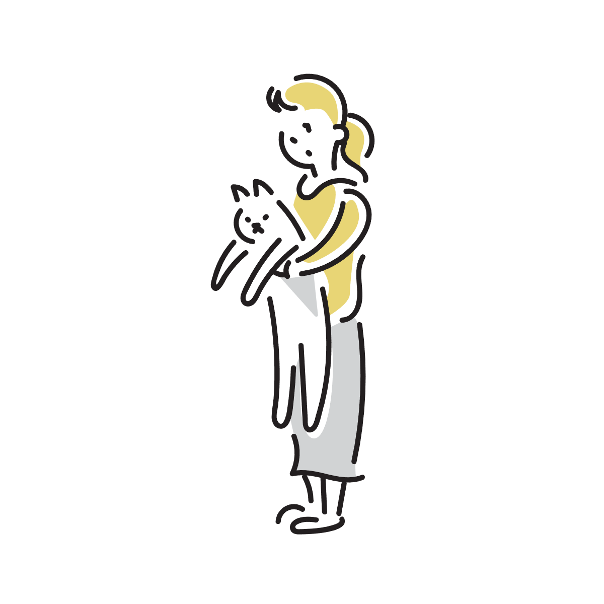
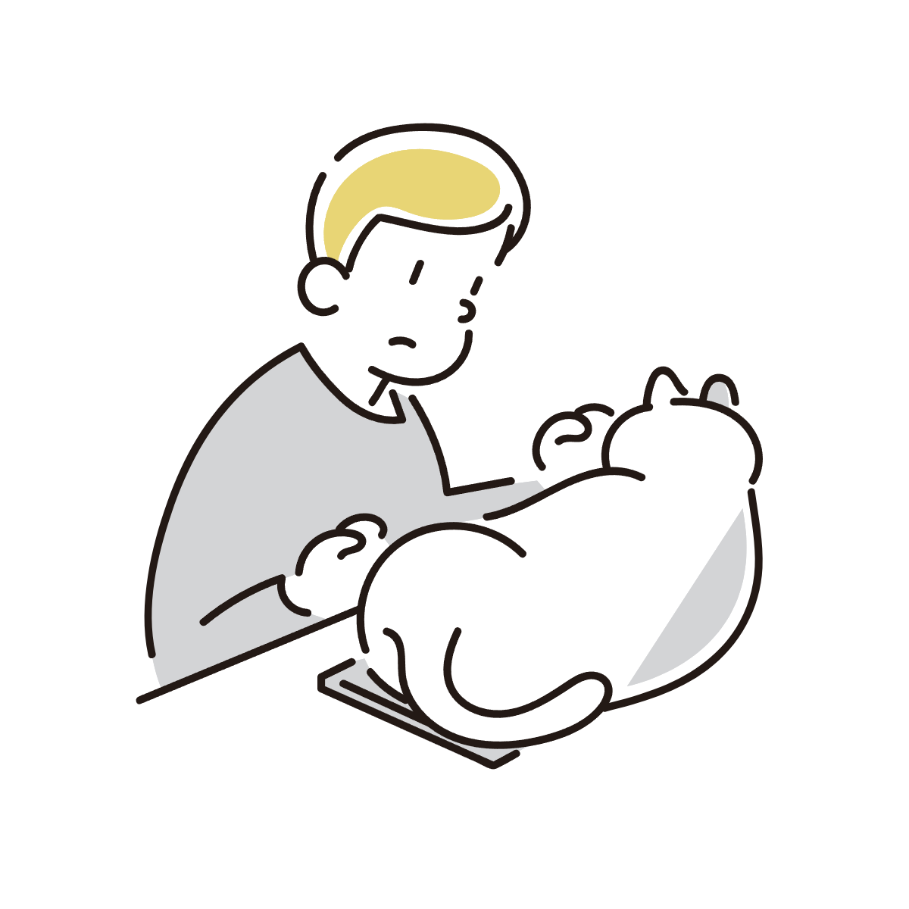
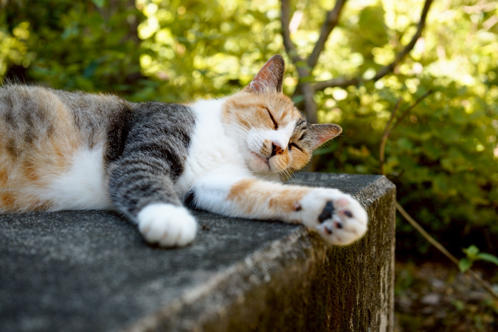
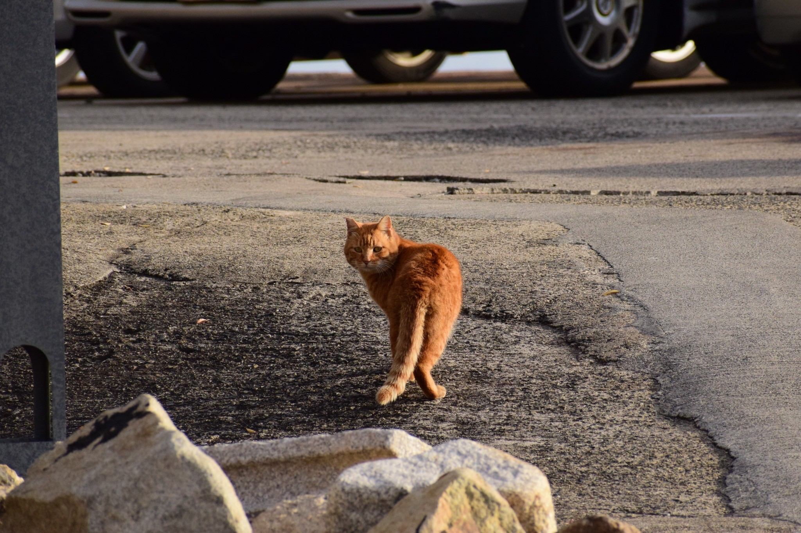
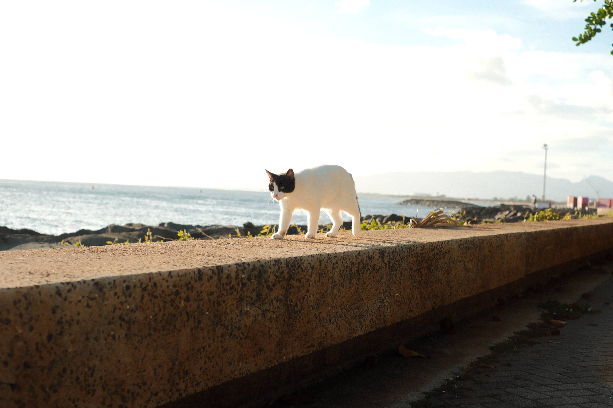
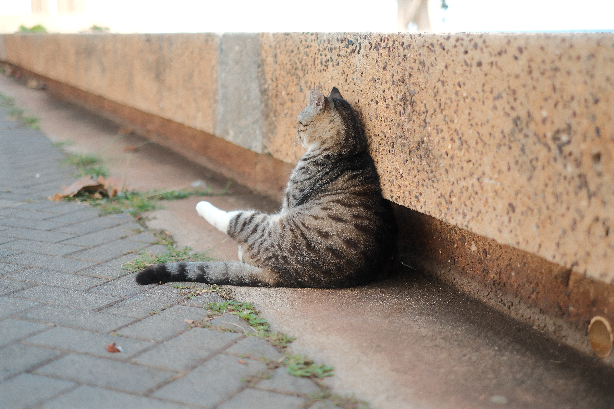

Q1. 休日のおすすめの過ごし方は？
Q2. 好きな食べ物のタイプは？
Q3. あなたの性格に近いものは？

＜撮影地：愛知県のとある山＞
自然豊かな場所が好きで落ち着いているあなたには、マイナスイオンに包まれて過ごす山のねこがピッタリです！

＜撮影地：広島県のとある港＞
波のようにゆったりした心を持つあなたには、のんびり屋で釣り人や漁師から魚のおすそ分けを楽しみに過ごす海辺のねこがピッタリです！

＜撮影地：ハワイ島のとある公園＞
好奇心旺盛で新しいことが大好きなあなたには、日本にはない魅力を知っている海外のねこがピッタリです！

＜撮影地：ハワイ島のとある公園＞
すべての要素を持ち合わせるあなたは、まさしく「ねこ」そのもの！どこでもねこのように気ままに生きて行けるでしょう。